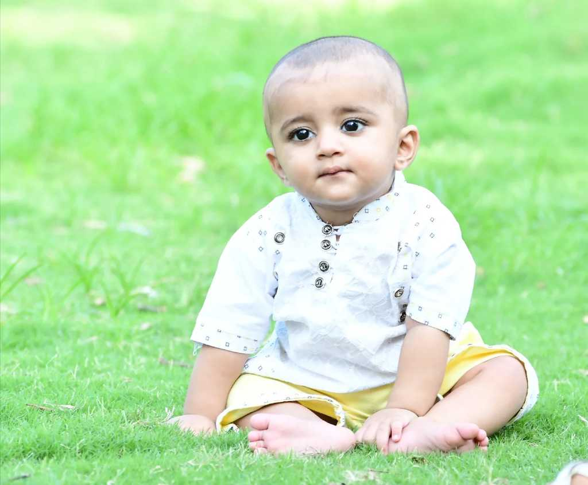

|  | AZAD CHAIWALA HISTORYI have made the majority of my personal wealth from IT and so in 2009 I decided that Pakistan needs to know, some of what I know if it stands any chance in the world. I founded and funded an IT institute by the name of Infaaq. It existed in the shadows for a whole decade. Having spent in excess of 10 crores from my own pocket and having run free or very low cost IT courses across 21 branches, I learnt one thing. That very few people appreciate "FREE or low" cost in Pakistan. With this new learned information, I decided to turn this entire teaching venture of mine from charity to a commercial project, With each course hand written by industry experts and overseen by me, I present you Azad CHAIWALA, the Institute v2. |